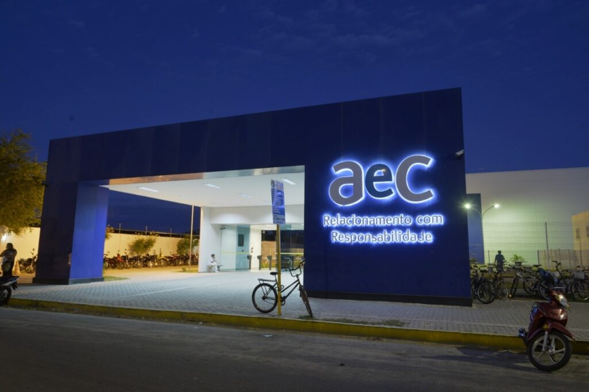

Você quer saber com o que eu trabalho atualmente?!
Atualmente eu trabalho na AEC como Monitor de Qualidade, "Ah, mas o que é isso?". Bem, eu escuto as ligações dos atendentes e redireciono notas de qualidade para eles, de 0 a 100, notas essas que vão garantir o destino dos operadores dentro da empresa, como uma forma de monitoria preventiva, legal não é?
